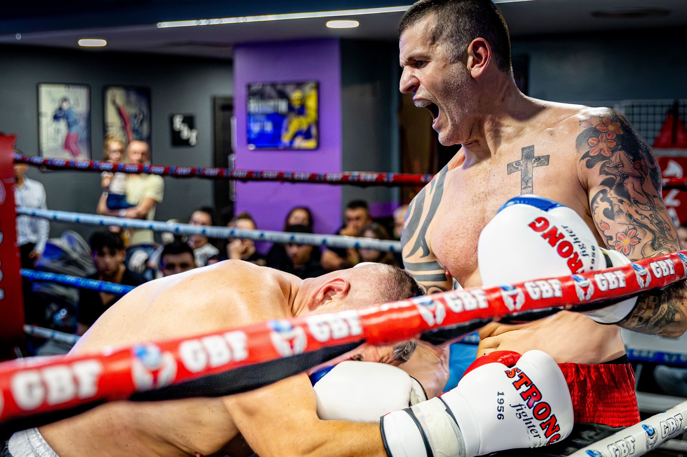
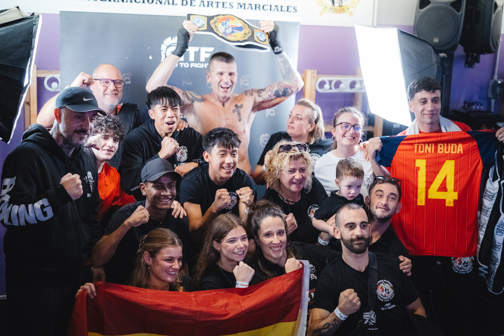

Lleida hosted Larida 44 on 31 October 2026 at the headquarters of the Global Boxing Federation. The official GBF listing billed the event as Ukraine versus Spain, with two Larida titles on the programme.
The federation scheduled the programme from 16:00 to 20:30. Image Media’s photographs follow the action at close range, from exchanges inside the ropes to a group gathering around a boxer holding a belt overhead.
Inside the ropes
Sergio Mendes’s ringside images capture two different moments of competition: an exchange between boxers wearing protective headgear and a close-range encounter beside the ropes. The frames focus on movement, guard and the limited space shared by the opponents.

Image Media coverage
Luis Moreira’s photograph widens the view beyond the exchanges, recording a shared moment with a belt, supporters and Spanish flags. Image Media covered the event with Sergio Mendes, Luis Moreira and Casian Nicorescu; this report features photographs by Sergio Mendes and Luis Moreira.

Image Media coverage
IM News Editorial Desk
Sergio Mendes; Luis Moreira; Casian Nicorescu / Image Media
Event title, date, venue and scheduled times checked against the official GBF listing.